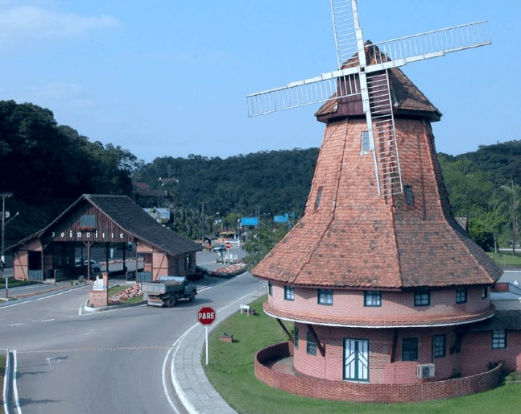
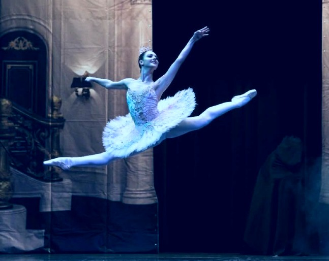
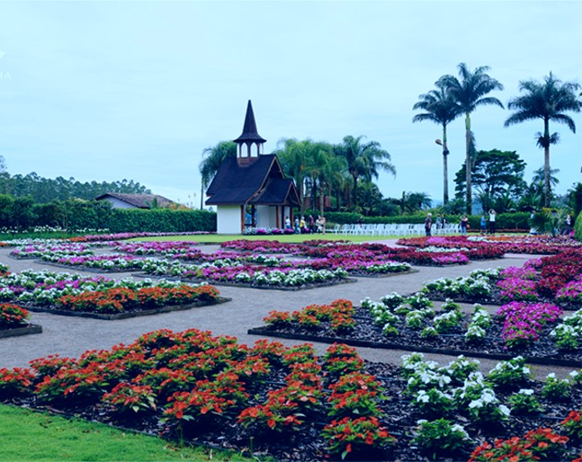

Venha conhecer as belezas de Joinville
Uma cidade que vale a pena conhecer. Urbana e rural, perto da serra e do mar, Joinville é moderna sem perder a identidade.
Conheça

A capital nacional da Dança
Sede do maior festival de dança do mundo e da única filial do Teatro Bolshoi fora da Rússia, Joinville vive, há 34 anos, a magia da dança.
Conheça

Uma cidade jardim, cidade das Flores
Há oito décadas, sempre no mês de novembro, a cidade de Joinville (SC) se transforma em um grande jardim, com a sua Festa das Flores
Conheça